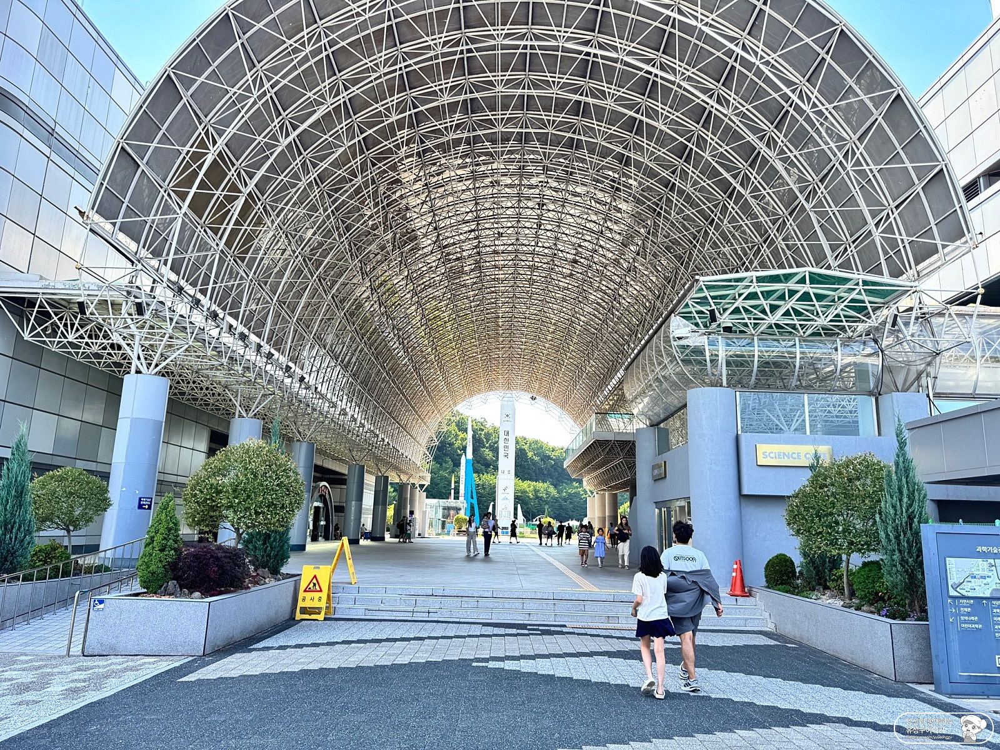
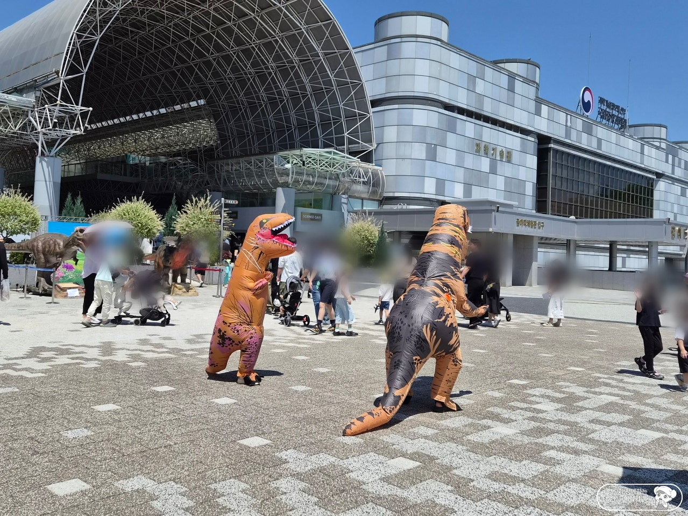
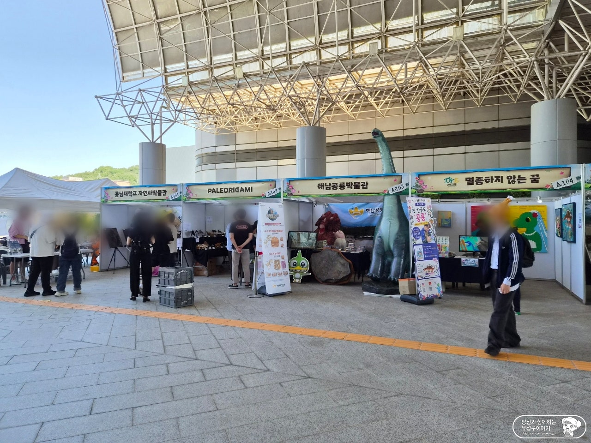
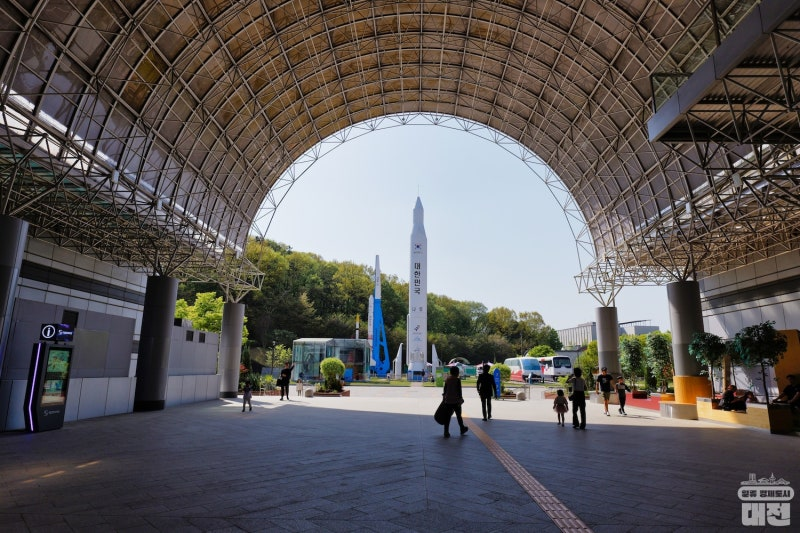

모두의 50m · 실제 사진 참고 자료
과학관 큰 아치와 중앙 통로
광장에서 보이는 큰 아치를 기준으로, 통로 안쪽 바닥과 점자블록을 살펴봐요.
아치 앞 계단과 왼쪽 경사로

A · 중앙 계단과 B · 왼쪽 경사로를 비교해요. 난간 옆 바닥이 어디로 이어지는지 원본을 확대해요.
경사로의 폭·기울기와 반대편 출구까지의 바닥은 이 사진으로 확인되지 않아요.
광장에서 보이는 큰 아치

광장 바닥에서 큰 아치·은색 벽·기둥을 찾아요. 사람에게 가려진 바닥은 따로 구분해서 살펴봐요.
아치 안쪽 바닥과 점자블록

바닥 이음새·노란 점자블록·기둥 앞 공간을 확대해요. 부스 뒤쪽과 반대편 출구는 보이지 않아요. 실제 통과 폭과 경사는 측정하지 않았어요.
아치 안쪽에서 나로호 방향을 보기

앞쪽 사진과 같은 큰 아치·둥근 기둥을 비교해요. 기둥 옆 포장 공간과 점자블록 옆 이음새를 크게 봐요. 버스 출발 06번·주차장 출발 04번의 서쪽 붉은 보도와 다른 위치이며, 다음 구간까지 이어지는 전체 길을 확인한 자료는 아니에요.